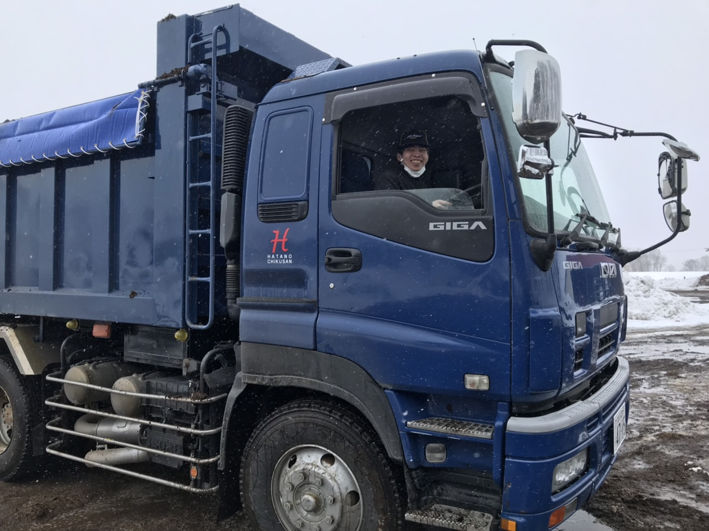

座長挨拶
何故かはわからないのですが、子供の頃から狸が好きです。
強くは意識したことがないのですが、思い返せば幼稚園のお絵かきでは狸の絵を描き、小学校の頃に狸を神様にした宗教を作り、最近も狸のバーチャルユーチューバーのイベントに参加してきました。
しかしこれほど狸が好きではあるのですが、動物園などに行って実際の狸を見てみると、あれ？狸ってこんなもんだったっけ？という違和感を感じてそこまで可愛いとは思いません。
おそらく僕が好きなのは現実に存在する狸ではなくて、僕の頭の中にある「理想の狸」なのでしょう。
その理想の狸を、自分だけで楽しんでいる分には問題ないのですが、その存在を他の人に伝えたいと思った時が困難の始まりです。
自分ではそれをわかっているつもりでいたけれど、実際にその色、毛並み、顔つきを考えだすとふわふわして捉えどころが無くなってきます。
言葉は足りず、画力もおぼつかず、理想とは程遠いアライグマのようなものができ、自分の表現力のなさに愕然とし絶望します。
しかしそれでも伝えたいのです。どれだけ不安になってもやはり自分の頭の中に確かに理想の狸はあり、その可愛さ、凛々しさを他の人に好きになってほしいのです。
12月に始動したナナペーハー第36回公演も、ついに公演日となりました。この4ヶ月間、自分の持てる力をフル活用して理想の狸を模索し続けてきました。狸は描けずともムジナくらいは描けたのではないかと思います。
本日は本当にご来場ありがとうございました。
このライブを好きになってくれなんてことは口が裂けても言えませんが、日記の片隅にでも残していただければ幸いです。
座長 大萩雅也
強くは意識したことがないのですが、思い返せば幼稚園のお絵かきでは狸の絵を描き、小学校の頃に狸を神様にした宗教を作り、最近も狸のバーチャルユーチューバーのイベントに参加してきました。
しかしこれほど狸が好きではあるのですが、動物園などに行って実際の狸を見てみると、あれ？狸ってこんなもんだったっけ？という違和感を感じてそこまで可愛いとは思いません。
おそらく僕が好きなのは現実に存在する狸ではなくて、僕の頭の中にある「理想の狸」なのでしょう。
その理想の狸を、自分だけで楽しんでいる分には問題ないのですが、その存在を他の人に伝えたいと思った時が困難の始まりです。
自分ではそれをわかっているつもりでいたけれど、実際にその色、毛並み、顔つきを考えだすとふわふわして捉えどころが無くなってきます。
言葉は足りず、画力もおぼつかず、理想とは程遠いアライグマのようなものができ、自分の表現力のなさに愕然とし絶望します。
しかしそれでも伝えたいのです。どれだけ不安になってもやはり自分の頭の中に確かに理想の狸はあり、その可愛さ、凛々しさを他の人に好きになってほしいのです。
12月に始動したナナペーハー第36回公演も、ついに公演日となりました。この4ヶ月間、自分の持てる力をフル活用して理想の狸を模索し続けてきました。狸は描けずともムジナくらいは描けたのではないかと思います。
本日は本当にご来場ありがとうございました。
このライブを好きになってくれなんてことは口が裂けても言えませんが、日記の片隅にでも残していただければ幸いです。
座長 大萩雅也
メンバー
-
名前：大萩雅也
出身：和歌山
なぜか好きなもの：たぬき
一言：腹から声出すぜ
-
名前：井田葉子
出身：群馬県前橋市
なぜか好きなもの：うたうことっ！
何か一言：私、魔女のキキ！こっちは黒猫のオチ！(ケン)
-
名前：大坂理冴
出身：岩手
なぜか好きなもの：松潤
一言：上京して丸3年、涙出てくるね
-
名前：川田遼太
出身：千葉
なぜか好きなもの：河邑ミク
一言：さぞかし。
-
名前：石井陸
出身：なし
なぜか好きなもの：パン
何か一言：お笑いのことはよく分からない。落研に入ってますます分からなくなった。おもしろいこと、たのしいことがすき
-
名前：今道周作
出身：長崎
なぜか好きなもの：ファブリーズ
何か一言：地元の期待に応えられるように頑張ります
-
名前：野村萌久実
出身：岩手
なぜか好きなもの：恐竜
何か一言：ほら、飲めよ
-
名前：岡竹 馨
出身：秋田
なぜか好きなもの：白米
何か一言：泣く子はいねが
-
名前：新田一貴
出身：ロンドン生
なぜか好きなもの：ペンギン系
何か一言：コント頑張
-
名前：野尻佐央
出身：千葉県
なぜか好きなもの：カルピス
何か一言：怠け者ですが働きます。
-
名前：山際勘太
出身：兵庫
なぜか好きなもの：渋谷LOFT
一言：ナナペで夢を叶えます
-

名前：間瀬 洸平
出身：愛知
なぜか好きなもの：ゲーム実況
何か一言：笑顔と子孫は絶やさない！！！